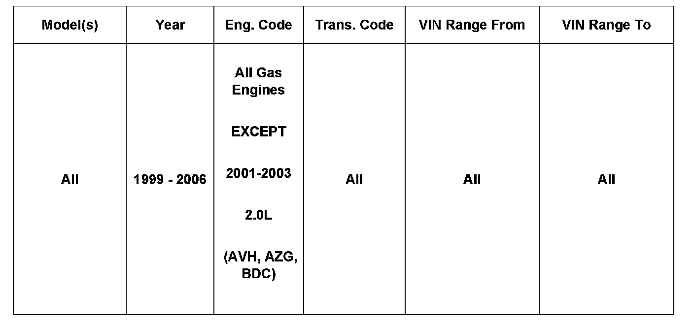
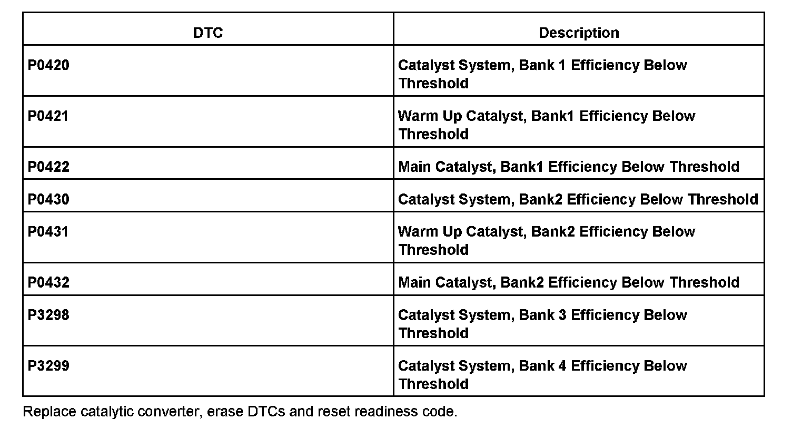
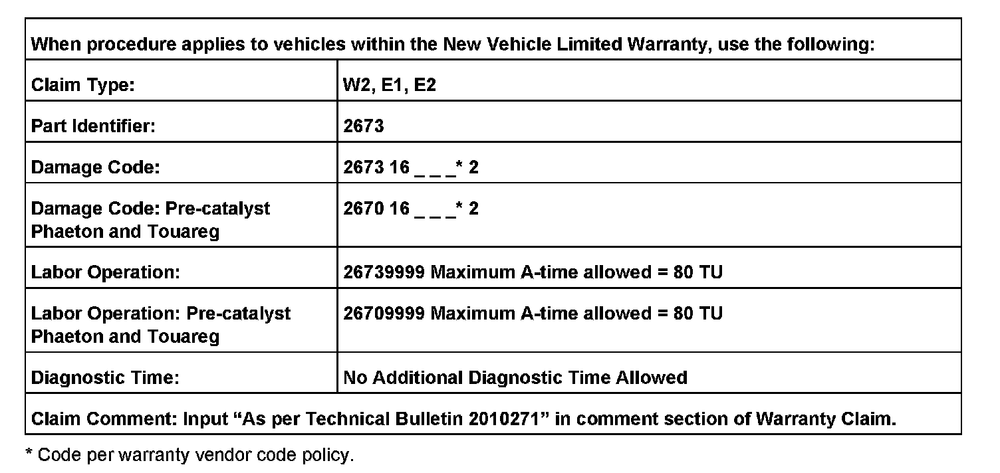

Emissions - Possible MIL ON/Cat Converter DTC's Set
26 07 06Sept. 13, 2007
2010271 Supersedes T.B. Group 26 number 07 01 dated Feb. 9, 2007 due to the removal of 2001-2003 2.0L (AVH, AZG, BDC) engines.

Vehicle Information
Condition
Catalytic Converter, Replacement Guidelines

Catalyst efficiency faults stored in memory (See DTC table).
Technical Background
Guidelines for catalytic converter replacement
Production Solution
No production change required.
Service
Tip:
Oil level MUST be correct, if overfilled, level should be adjusted to the proper level prior to performing procedure.
Adjusting oil level is NOT covered by Warranty.
Exhaust system damage from outside influences is NOT covered by Warranty.
The following steps are to be followed before replacement of catalytic converters.
Inspect complete exhaust system for broken or missing components, loose clamps, etc. Repair as necessary.
If vehicle has MIL ON, investigate fault memory without erasing codes.
Before performing any repair, make a print out of fault memory including:
Address 01 fault memory (including ECM information)
Address 01 Measuring Value Block 46 (and 47, if applicable)
Tip:
For 4 bank systems such as Phaeton W12, Display groups 46 and 47 must be printed out from addresses 01 and 11.
OBD freeze-frame mode 2, and 6.
Tip:
For OBD, see Repair Manual - Fuel Injection & Ignition 2.0 Liter 4yl. 2V Generic Scan Tool Engine Code(s). AEG, BBW, BEV, ST-Generic Scan Tool
Steps for printing OBD from the touch screen:
Select "OBD".
Select "mode 2".
Select all PIDS displayed (use scroll bar if necessary).
Select right arrow key to display results.
Select "print", and then save result.
Save results for modes 2 and 6.
Print - self diagnosis log.
DO NOT replace catalyst if software updates related to catalyst are available. Check for applicable Technical Bulletins or Campaigns.
Perform any applicable software updates available through Technical Bulletins or Campaigns.
If other faults related to fuel mixture, oxygen sensor or misfire are present:
DO NOT replace catalyst(s).
Correct condition, erase DTCs, reset readiness codes and monitor measured value block (MVB) in 46, 47 until complete ("Test OK or Test n OK").
If after repair of other faults, diagnostic result in MVB 46 (and 47, if applicable) is/are OK:
DO NOT replace catalyst(s).
If after repairing other fault codes and setting readiness code, and any fault codes in the table return:
Replace catalyst(s) as necessary, using applicable SRTs.
If software updates do not apply, and only one or more of the following fault codes (DTCs) are present (see table):
If DTC text indicates bank 2, bank 3, bank 4:
Verify catalyst location before replacement, see Service Manual repair group 26. Use applicable SRTs.
For technical assistance, select the "Technical Assistance" tab in ElsaWeb and follow the instructions to obtain a 6 digit pin.
Tip:
Before repairing vehicle or erasing fault codes (DTCs) remember to make print-outs including freeze-frame data as required and attach to the repair order.
If catalytic converter is on parts submission, attach copies of all supporting documentation (including printouts) required when sending parts to Warranty Test Center.

Warranty
Required Parts and Tools
When replacing any catalyst, your VIN may be required to ensure the correct part is ordered (check with your parts department).
No Special Tools required.
Additional Information
All part and service references provided in this Technical Bulletin are subject to change and/or removal.
Always check with your Parts Dept. and Repair Manuals for the latest information.